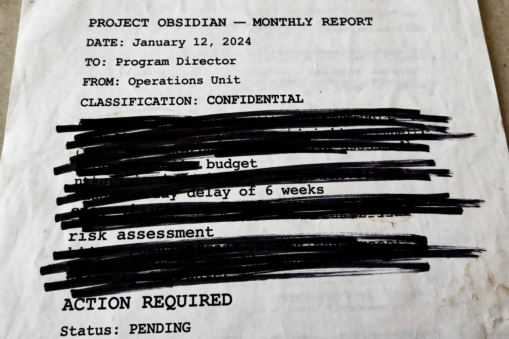

 |
Censorship is the suppression of speech, public communication, or other information. This may be done on the basis that such material is considered objectionable, harmful, sensitive, or "inconvenient". Censorship can be conducted by governments and private organizations. When an individual such as an author or other creator engages in censorship of their own works or speech, it is referred to as self-censorship.
Governments and private organizations may engage in censorship for reasons including national security, control of obscenity, prevention of hate speech, protection of children or vulnerable groups, promotion or restriction of political or religious views, and prevention of slander and libel. Censorship varies widely by country and era and is a central topic in debates about freedom of speech and the press.
Political censorship occurs when governments restrict information that might undermine their authority. It has been a feature of most authoritarian regimes: the Soviet Union maintained a vast censorship apparatus (Glavlit), Nazi Germany's Propaganda Ministry controlled all media, and many states today restrict reporting on sensitive political topics. Dissidents such as Soviet samizdat writers circumvented controls by clandestine copying and distribution.
Religious authorities have historically suppressed works deemed heretical or blasphemous. The Roman Catholic Church's Index Librorum Prohibitorum (1559–1966) listed prohibited books. Religious censorship continues in various forms, from blasphemy laws to the suppression of texts offensive to religious sensibilities.
Censorship on moral grounds targets material considered obscene or corrupting. Notable examples include the United States' Comstock laws, film censorship under the Hays Code (1930–1968), and campaigns against comic books and popular music. Obscenity law remains contested terrain in many democracies.
In wartime, states censor correspondence and reporting to protect operational security; letters from soldiers in both World Wars were routinely redacted. Corporate censorship arises when organizations suppress speech — for example, publishers or broadcasters declining content under commercial or legal pressure, or employers restricting employees' expression. Internet censorship — the control or suppression of what can be accessed, published, or viewed online — is carried out by states (such as China's "Great Firewall") and by platforms moderating user content.
Defenders argue censorship protects national security, public order, children, and social harmony, and prevents genuine harms such as incitement to violence. Critics argue that it stifles dissent, insulates power from scrutiny, and infantilizes the public; John Milton's Areopagitica (1644) and John Stuart Mill's On Liberty (1859) are classic statements of the anti-censorship position. The "Streisand effect" describes how attempts to suppress information can instead publicize it widely.
Books have been banned and burned throughout history, from the Qin dynasty's suppression of texts to modern school-library controversies. Film, broadcasting, music, theatre, visual art, video games, and the press have all been subject to classification boards, licensing, and prior restraint in different jurisdictions. Press-freedom organizations such as Reporters Without Borders publish annual indices ranking countries by media freedom.
This article is a recreation from memory in the style of Wikipedia.